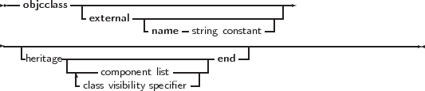
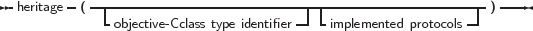
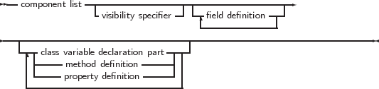
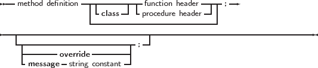
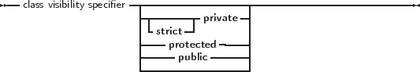

Objective-C or -Pascal classes are declared much as Object Pascal classes are declared, but they use the objcclass keyword:
_________________________________________________________________________________________________________
Objective C Class types





___________________________________________________________________
As can be seen, the syntax is roughly equivalent to Object Pascal syntax, with some extensions.
In order to use Objective-C classes, an external modifier exists: this indicates to the compiler that the class is implemented in an external object file or library, and that the definition is meant for import purposes. The following is an example of an external Objective-C class definition:
As can be seen, the class definition is not so different from an Object Pascal class definition; Only the message directive is more prominently present: each Objective-C or Objective-Pascal method must have a message name associated with it. In the above example, no external name was specified for the class definition, meaning that the Pascal identifier is used as the name for the Objective-C class. However, since Objective-C is not so strict in its naming conventions, sometimes an alias must be created for an Objective-C class name that doesn’t obey the Pascal identifier rules.
The following example defines an Objective-C class which is implemented in Pascal:
The absence of the external keyword tells the compiler that the methods must be implemented later in the source file: it will be treated much like a regular object pascal class. Note the presence of the override directive: in Objective-C, all methods are virtual. In Object Pascal, overriding a virtual method must be done through the override directive. This has been extended to Objective-C classes: it allows the compiler to verify the correctness of the definition.
Unless the class is implementing the method of a protocol (more about this in a subsequent section), one of message or override is expected: all methods are virtual, and either a new method is started (or re-introduced), or an existing is overridden. Only in the case of a method that is part of a protocol, the method can be defined without message or override.
Note that the Objective-C class declaration may or may not specify a parent class. In Object Pascal, omitting a parent class will automatically make the new class a descendant of TObject. In Objective-C, this is not the case: the new class will be a new root class. However, Objective-C does have a class which fullfills the function of generic root class: NSObject, which can be considered the equivalent of TObject in Object Pascal. It has other root classes, but in general, Objective-Pascal classes should descend from NSObject. If a new root class is constructed anyway, it must implement the NSObjectProtocol - just as the NSObject class itself does.
Finally, objective-Pascal classes can have properties, but these properties are only usable in Pascal code: the compiler currently does not export the properties in a way that makes them usable from Objective-C.